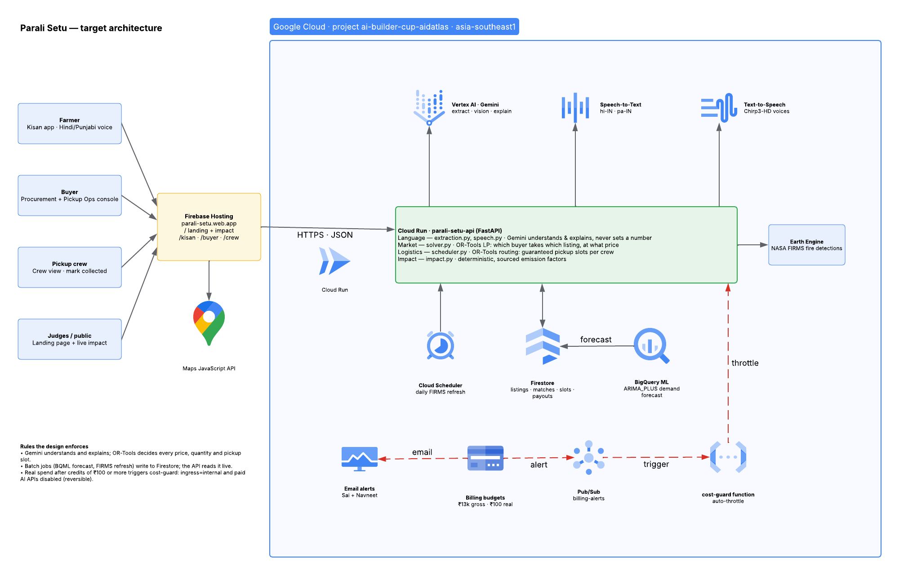

Punjab & Haryana · paddy harvest season
A guaranteed pickup before sowing, so the stubble never gets burned.
Farmers list their stubble by voice in Punjabi or Hindi. An optimizer matches it to a buyer whose crews can reach the field and books a pickup slot before the wheat-sowing deadline. The field gets cleared for free and the farmer gets paid.
Parali (ਪਰਾਲੀ) is stubble; setu (ਸੇਤੂ) is a bridge. Prototype with demo buyers and listings.
The problem
Fewer fires counted, the same area burned
| Straw produced | 17–18 quintals |
|---|---|
| Its value delivered to a plant | ₹2,200–3,000 |
| Baling and transport, paid by the farmer | ₹2,500–4,000 |
| Burning | ≈₹500 and one day |
| Time before wheat sowing | 10–15 days |
Selling straw nets a farmer roughly nothing. What changes the decision is a free, guaranteed clearing before the sowing date, with a small payment on top. The bottleneck is coordinating a scarce baler fleet, and that is what Parali Setu optimizes.
How it works
Speak once, confirm once, get a slot
Speak
The farmer holds one button and says how many acres, which crop, the village and when the field must be clear. Cloud Speech-to-Text transcribes Punjabi or Hindi; Gemini turns it into a structured listing.
Confirm
The app reads the details back word for word. If something is missing, Gemini asks one question, never two. A photo lets Gemini grade the stubble.
Match and schedule
An OR-Tools linear program picks the buyer whose crews can reach the farm. An OR-Tools routing model books a crew slot before the sowing deadline, or says honestly why it can't.
Collect and pay
The crew marks the pickup collected, the farmer's payout is recorded and the avoided emissions are counted. Gemini explains every result; it never sets a price, a quantity or a slot.
Recent fire activity refreshed periodically, not live
What the satellites saw this week
NASA FIRMS detections over the 8 demo districts, fetched through Google Earth Engine. They also cross-check farmers' no-burn photos.
Impact
What if a share of Punjab's straw went through Parali Setu?
Architecture on Google Cloud
Language from Gemini, numbers from optimizers


- Gemini on Vertex AI understands speech and photos, asks the one follow-up question and explains results, in Punjabi, Hindi or English.
- OR-Tools on Cloud Run decides every price, quantity and pickup slot: a linear program for matching, a routing model for crews.
- Firestore holds live state; BigQuery ML forecasts buyer demand; Earth Engine supplies NASA FIRMS fire detections.
- Cost guard: billing budgets alert the team and a Cloud Run function throttles the API if real money is ever charged.